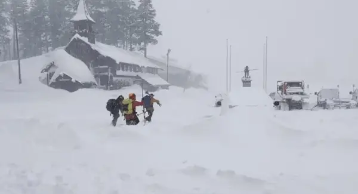

Десет скијачи исчезнале, а шестмина се заробени во лавина во Калифорнија

- асови несреќата, автопатот близина затворен поради нулта видливост поради зимската бура, спасувачите стигнале местото лавината – изјави капетанот расел грин канцеларијата шерифот округот невада.
- десет скијачи исчезнале, шестмина заробени лавина калифорнија десет скијачи исчезнале, шестмина заробени лавина калифорнија најмалку 10 скијачи водат исчезнати, шест заробени чекаат спасување тешки снежни услови откако лавина вчера погоди оддалечена патека планините сиера невада калифорнија, соопштија властите.
- лавината погоди касл пик близина траки, калифорнија, 16 километри северно езерото тахо, 11:30 часот тихоокеанско време, закопувајќи група 16 скијачи, според објавата канцеларијата шерифот округот невада.
Извори
-
(Видео) Најмалку десет скијачи исчезнаа во лавина во Калифорнија: започната е спасувачка операција
Извор: makfax.com.mk
-
Десет скијачи исчезнаа, најмалку шест се заробени во лавина во Калифорнија
Извор: netpress.com.mk
-
Десет скијачи исчезнати, најмалку шест заробени во лавина во Калифорнија
Извор: mk.tv21.tv
-
Десет скијачи исчезнале, а шестмина се заробени во лавина во Калифорнија
Извор: novamakedonija.com.mk
-
Десет скијачи исчезнале, а шестмина се заробени во лавина во Калифорнија (ВИДЕО)
Извор: kurir.mk
-
🎥 10 СКИЈАЧИ ИСЧЕЗНАА ВО ЛАВИНА ВО КАЛИФОРНИЈА Шестмина се извлечени, спасувачката операција е во тек
Извор: plusinfo.mk
-
Десет скијачи исчезнале, а шестмина се заробени во лавина во Калифорнија
Извор: republika.mk